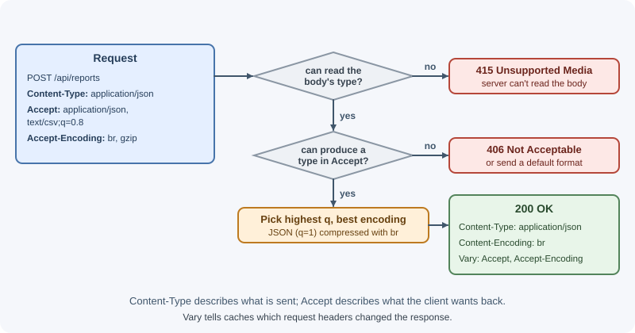
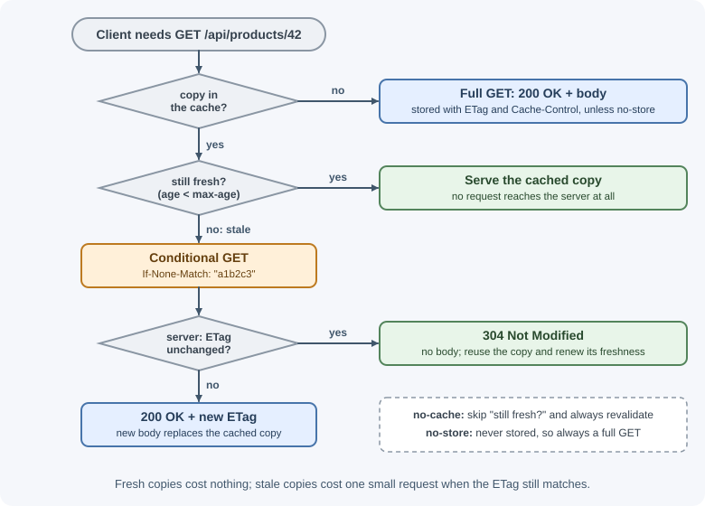

HTTP Headers and Content Negotiation¶
Headers are the metadata of an HTTP message. They tell the other side what format the body is in, who the caller is, whether a response may be cached, which security rules the browser must enforce, and much more. A backend developer reads request headers on every request and sets response headers on every response.
Why it matters¶
- Correct parsing: without the right
Content-Type, a server cannot parse a body and a browser cannot render a response. - Authentication: credentials travel in
AuthorizationorCookie. - Performance:
Cache-Control,ETag, andContent-Encodingdecide whether a response is downloaded again, served from cache, or compressed. - Security: headers such as
Strict-Transport-SecurityandContent-Security-Policyswitch on browser protections against downgrade, clickjacking, and script injection. - Cross-origin access: CORS is implemented entirely with headers. See CORS.
- Real client information behind proxies:
X-Forwarded-ForandForwardedcarry the original client IP and protocol.
Real-world usage¶
- GitHub reports rate limits in response headers. Every REST API
response carries
x-ratelimit-limit,x-ratelimit-remaining,x-ratelimit-used,x-ratelimit-reset, andx-ratelimit-resource, so clients can pace themselves without a separate "how much quota is left?" call. - GitHub rewards conditional requests. Most GitHub endpoints return an
etagheader, and many returnlast-modified. GitHub's best practices explain that a conditionalGETanswered with304 Not Modifiedis fast and does not use your rate limit, which makes polling much cheaper. - GitHub and Stripe select API versions with a header. GitHub reads
X-GitHub-Api-Version(a date such as2022-11-28); Stripe readsStripe-Versionand otherwise uses the account's default version. URLs stay the same across versions. - GitHub exposes custom headers to browsers. A cross-origin request to
the GitHub API gets
Access-Control-Expose-HeaderslistingETag,Link, and thex-ratelimit-*headers, so browser code can read pagination links and rate-limit state.
How it works¶
Syntax¶
A header is a case-insensitive name, a colon, and a value. Headers come after the request or status line and end with a blank line, after which the body starts.
POST /api/orders HTTP/1.1 <- request line
Host: api.shop.example <- headers
Content-Type: application/json
Content-Length: 34
Authorization: Bearer eyJhbGci...
<- blank line ends the headers
{"productId":"p-42","quantity":1} <- body
Rules worth knowing:
- Names are case-insensitive.
content-typeandContent-Typeare the same. HTTP/2 and HTTP/3 send them in lowercase. Node.js exposes request headers in lowercase (req.headers["content-type"]). - Some headers hold lists, separated by commas
(
Accept-Encoding: gzip, br). A list header may also be repeated, and the values are combined. Set-Cookieis special: it is sent once per cookie and must not be combined with commas.- Parameters follow a semicolon:
Content-Type: text/html; charset=utf-8. - The official term is "field"; "header" is the everyday name.
Kinds of headers¶
| Kind | Describes | Examples |
|---|---|---|
| Request headers | The request, the client, or its preferences | Host, User-Agent, Accept, Authorization, Cookie |
| Response headers | The response or the server | Location, Set-Cookie, Retry-After, WWW-Authenticate, Allow |
| Representation headers | The body (in either direction) | Content-Type, Content-Length, Content-Encoding, Content-Language |
| Caching headers | Storing and revalidating responses | Cache-Control, ETag, Last-Modified, Vary, Expires |
| Conditional headers | Preconditions the server checks | If-None-Match, If-Modified-Since, If-Match, If-Unmodified-Since |
| Security headers | Browser protections | Strict-Transport-Security, Content-Security-Policy, X-Content-Type-Options |
| CORS headers | Cross-origin permissions | Origin, Access-Control-Allow-Origin, and the other Access-Control-* headers |
Common request headers¶
| Header | Purpose | Example |
|---|---|---|
Host |
Which site the request is for. Required in HTTP/1.1; lets one IP serve many domains | Host: api.shop.example |
User-Agent |
Identifies the client software. Easy to fake; use only for analytics and debugging | User-Agent: Mozilla/5.0 ... |
Accept |
Response formats the client can handle, with optional preferences | Accept: application/json |
Accept-Encoding |
Compression formats the client supports | Accept-Encoding: gzip, deflate, br, zstd |
Accept-Language |
Preferred human languages | Accept-Language: en-US, en;q=0.9, fr;q=0.5 |
Authorization |
Credentials for the request | Authorization: Bearer eyJhbGci... or Basic dXNlcjpwYXNz |
Content-Type |
Format of the request body | Content-Type: application/json |
Content-Length |
Size of the request body in bytes | Content-Length: 348 |
Cookie |
Cookies the browser stored for this site | Cookie: sid=abc123; theme=dark |
Origin |
Scheme, host, and port of the page that made a cross-origin or state-changing request | Origin: https://app.shop.example |
Referer |
URL (or origin) of the page that linked here. Note the historical misspelling | Referer: https://shop.example/cart |
If-None-Match |
"Send the body only if the ETag differs from these" | If-None-Match: "a1b2c3" |
If-Modified-Since |
"Send the body only if it changed after this date" | If-Modified-Since: Tue, 03 Nov 2026 10:00:00 GMT |
If-Match |
"Only apply this change if the ETag still matches" (prevents lost updates) | If-Match: "v7" |
Range |
Request part of a resource | Range: bytes=0-1023 |
X-Forwarded-For |
Original client IP, appended by each proxy | X-Forwarded-For: 198.51.100.7, 10.0.0.2 |
X-Forwarded-Proto |
Original protocol before the proxy terminated TLS | X-Forwarded-Proto: https |
X-Forwarded-Host |
Original Host before the proxy rewrote it |
X-Forwarded-Host: shop.example |
Forwarded |
The standard (RFC 7239) version of the three above | Forwarded: for=198.51.100.7;proto=https;host=shop.example |
Forwarded headers can be forged
Anyone can send X-Forwarded-For: 1.2.3.4. Trust these headers only when
they were set by your own proxy, and configure your framework to know how
many proxies sit in front of it. In Express that is the trust proxy
setting. See the request object.
Common response headers¶
| Header | Purpose | Example |
|---|---|---|
Content-Type |
Format of the response body | Content-Type: application/json; charset=utf-8 |
Content-Length |
Body size in bytes | Content-Length: 1532 |
Content-Encoding |
Compression applied to the body | Content-Encoding: gzip |
Content-Disposition |
Show inline or download as a file, and the filename | Content-Disposition: attachment; filename="invoice-42.pdf" |
Set-Cookie |
Store a cookie in the browser | Set-Cookie: sid=abc; HttpOnly; Secure; SameSite=Lax; Path=/ |
Location |
The new resource (201) or redirect target (3xx) |
Location: /api/orders/901 |
Cache-Control |
Caching rules | Cache-Control: public, max-age=3600 |
ETag |
An identifier for this version of the resource | ETag: "33a64df5" |
Last-Modified |
When the resource last changed | Last-Modified: Tue, 03 Nov 2026 10:00:00 GMT |
Vary |
Which request headers change the response (affects cache keys) | Vary: Accept-Encoding, Origin |
Retry-After |
How long to wait before retrying (429, 503, redirects) |
Retry-After: 120 |
WWW-Authenticate |
How to authenticate; required with 401 |
WWW-Authenticate: Bearer realm="api" |
Allow |
Methods supported; required with 405 |
Allow: GET, POST |
Accept-Ranges |
The server supports range requests | Accept-Ranges: bytes |
Content-Range |
Which part of the resource this response holds (206) |
Content-Range: bytes 0-1023/52000 |
Set-Cookie attributes (HttpOnly, Secure, SameSite, Max-Age,
Domain, Path) are covered in sessions, cookies, and JWT.
Security headers¶
These response headers turn on browser protections. They matter most for
responses that render in a browser (HTML pages), but are cheap to send from
APIs too. In Express, the helmet middleware sets sensible defaults; see
Express security best practices.
| Header | Protects against | Typical value |
|---|---|---|
Strict-Transport-Security (HSTS) |
Downgrade to plain HTTP and cookie theft on insecure networks. The browser uses HTTPS only for this host for max-age seconds |
max-age=63072000; includeSubDomains |
Content-Security-Policy (CSP) |
Cross-site scripting and data injection. Lists which sources may load scripts, styles, images, frames, and so on | default-src 'self'; script-src 'self'; frame-ancestors 'none' |
X-Content-Type-Options |
MIME sniffing, where a browser guesses a type and runs an uploaded "image" as script | nosniff |
X-Frame-Options |
Clickjacking (your page embedded invisibly in an attacker's frame). Legacy; superseded by CSP frame-ancestors |
DENY or SAMEORIGIN |
Referrer-Policy |
Leaking full URLs (which may contain IDs or tokens) to other sites | strict-origin-when-cross-origin (the modern browser default) or no-referrer |
Permissions-Policy |
Pages or embedded frames using powerful features | camera=(), microphone=(), geolocation=() |
X-Frame-Options vs frame-ancestors: both control who may frame your page.
CSP frame-ancestors is the modern standard and supports lists of allowed
origins; X-Frame-Options only understands DENY and SAMEORIGIN. Send
frame-ancestors, and add X-Frame-Options for old browsers if needed.
HSTS needs care: once a browser has seen it, the site cannot fall back to
HTTP until max-age expires. Test with a short max-age first.
CORS headers¶
Browsers send Origin on cross-origin requests and only let the page read
the response if the server replies with matching Access-Control-Allow-*
headers. Every CORS header is explained in CORS.
Content negotiation¶
Content negotiation lets one URL serve different representations: JSON or XML, English or French, gzip or Brotli.
The client states preferences with Accept, Accept-Language, and
Accept-Encoding. A quality value (q, from 0 to 1, default 1)
ranks alternatives:
Accept: application/json, text/csv;q=0.8, */*;q=0.1
This means "JSON is best, CSV is fine, anything else as a last resort".
The server picks a representation, labels it with Content-Type (and
Content-Language/Content-Encoding), and adds Vary naming the headers it
used, so caches keep separate copies.
| Situation | Status |
|---|---|
The server cannot produce anything in the client's Accept list |
406 Not Acceptable (or ignore Accept and return the default format) |
| The client sent a body in a format the server does not accept | 415 Unsupported Media Type |
Accept describes what the client wants back; Content-Type describes
what is being sent. Mixing them up is a common bug.

Common media types for APIs:
| Media type | Used for |
|---|---|
application/json |
JSON bodies |
application/problem+json |
Error responses in RFC 9457 format |
application/x-www-form-urlencoded |
Classic HTML form posts |
multipart/form-data |
Forms with file uploads |
text/plain, text/html, text/csv |
Text formats |
application/octet-stream |
Arbitrary binary data |
text/event-stream |
Server-Sent Events |
HTTP caching in depth¶
Caching lets browsers, CDNs, and proxies reuse a response instead of asking the server again. Two questions drive it: may this be stored, and for how long is it fresh? and when it is stale, how do we check it cheaply?
Private caches belong to one user (the browser cache). Shared caches serve many users (CDNs, proxies).
Cache-Control directives¶
| Directive | Meaning |
|---|---|
max-age=N |
The response is fresh for N seconds; caches may reuse it without asking |
s-maxage=N |
Like max-age, but only for shared caches (overrides max-age there) |
public |
Any cache, including shared ones, may store it (even if the request had Authorization) |
private |
Only the user's own browser may store it; CDNs must not |
no-cache |
May be stored, but must be revalidated with the server before every reuse |
no-store |
Must not be stored anywhere, ever. For sensitive data |
must-revalidate |
Once stale, the cache must not serve it without successful revalidation |
immutable |
The response will never change while fresh; the browser need not revalidate on reload |
stale-while-revalidate=N |
After going stale, the cache may serve the old copy for up to N seconds while it refreshes in the background |
no-cache does not mean do not cache
no-cache means "always check with me first". no-store means "never
keep a copy". For bank statements and personal data, use no-store.
Typical policies:
# Fingerprinted static asset (app.3f9a1c.js): cache for a year
Cache-Control: public, max-age=31536000, immutable
# Public, changes occasionally (product list): short freshness, CDN longer
Cache-Control: public, max-age=60, s-maxage=300, stale-while-revalidate=30
# Per-user API data: browser only, always revalidate
Cache-Control: private, no-cache
# Sensitive data: never store
Cache-Control: no-store
Validation with ETag and Last-Modified¶
When a cached response goes stale, the client can ask "has it changed?" instead of downloading it again:
1) First request
GET /api/products/42
200 OK
ETag: "a1b2c3"
Cache-Control: no-cache
{ ...full body... }
2) Later request, revalidating
GET /api/products/42
If-None-Match: "a1b2c3"
304 Not Modified <- no body; reuse the cached copy
ETag: "a1b2c3"
ETagis an opaque version identifier, often a hash of the body. A weak ETag (W/"a1b2c3") means "semantically equivalent"; a strong one means "byte for byte identical". Express generates weak ETags forres.send()/res.json()and answers304automatically when they match.Last-ModifiedwithIf-Modified-Sinceworks the same way using a date, with only one-second precision.- ETags also prevent lost updates: the client sends
If-Match: "v7"with aPUT, and the server returns412 Precondition Failedif the resource has changed.

Vary and cache keys¶
A cache normally keys a response by method and URL. If the response depends
on a request header, list it in Vary so the cache stores separate copies:
Vary: Accept-Encodingbecause gzip and Brotli bodies differ.Vary: OriginwhenAccess-Control-Allow-Originchanges per origin.Vary: Accept-Languagewhen you serve translated content.
Avoid Vary: Cookie or Vary: User-Agent on public content; they split the
cache into near-useless fragments.
See caching for application and database caching.
Custom headers and request IDs¶
You can define your own headers for metadata that has no standard header,
such as a request ID or an API version. The old convention of prefixing
custom headers with X- is deprecated (RFC 6648), because "experimental"
headers often become standard and the prefix then becomes permanent baggage.
Many widely used headers still carry it (X-Request-Id), and that is fine.
A request ID (also called a correlation ID) ties together every log line for one request across services:
- The edge proxy or the first service generates an ID if none was sent.
- Every service logs it and forwards it on outgoing calls.
- The response includes it so users can quote it to support.
Browsers can only read custom response headers cross-origin if the server
lists them in Access-Control-Expose-Headers. See CORS.
Header size limits¶
Servers limit header size to protect memory. Node.js rejects requests whose
headers exceed 16 KB by default with 431 Request Header Fields Too Large;
proxies such as Nginx have their own limits. The usual culprits are too many
or too large cookies and oversized tokens. Keep cookies small and avoid
stuffing data into JWTs.
When to use and when not to use¶
Caching headers:
- Use
public, max-age(andimmutablefor fingerprinted files) for assets and public data that many users share. - Use
private, no-cache(or a shortmax-age) for per-user data that may live in the browser but must be revalidated. - Use
no-storefor sensitive data: account pages, tokens, financial or health records. - Do not rely on caches for data that must be correct immediately after a write, unless you invalidate them.
Custom headers versus the body:
- Use a header for metadata about the message: request IDs, rate-limit state, API version, idempotency keys. Proxies and tools can read headers without parsing the body.
- Use the body for the data itself and for anything large or structured.
- Do not put secrets or personal data in custom headers that proxies log.
| Response type | Cache-Control | Validator | Notes |
|---|---|---|---|
| Fingerprinted static asset | public, max-age=31536000, immutable |
Not needed | Change the file name to change the content |
| Public, slowly changing data | public, max-age=60, s-maxage=300 |
ETag |
Add stale-while-revalidate for smoother refreshes |
| Per-user data | private, no-cache |
ETag |
Revalidation saves bandwidth with 304 |
| Sensitive data | no-store |
None | Never stored by browsers or CDNs |
Practical examples¶
Reading and setting headers in Express¶
import express from "express";
const app = express();
app.get("/api/report", (req, res) => {
// Reading: req.get() is case-insensitive
const lang = req.get("Accept-Language");
const ua = req.get("User-Agent");
// Setting
res.set({
"Cache-Control": "private, no-cache",
"Content-Language": "en",
"X-Request-Id": "7f3c9a2e",
});
res.json({ lang, ua });
});
app.listen(3000);
Content negotiation with res.format¶
app.get("/api/users", (req, res) => {
const users = [{ id: 1, name: "Ana" }];
// res.format picks a handler from Accept and adds "Vary: Accept" itself
res.format({
"application/json": () => res.json(users),
"text/csv": () => res.type("text/csv").send("id,name\n1,Ana\n"),
default: () => res.status(406).send("Not Acceptable"),
});
});
curl -H "Accept: text/csv" http://localhost:3000/api/users
curl -H "Accept: application/xml" -i http://localhost:3000/api/users # 406
Caching a public resource with ETag¶
import { createHash } from "node:crypto";
app.get("/api/products/:id", (req, res) => {
const product = { id: req.params.id, name: "Desk lamp", price: 3999 };
const body = JSON.stringify(product);
const etag = `"${createHash("sha1").update(body).digest("base64url")}"`;
res.set({ ETag: etag, "Cache-Control": "public, max-age=60" });
if (req.get("If-None-Match") === etag) {
return res.status(304).end(); // client copy is current
}
res.type("application/json").send(body);
});
Express would generate and compare an ETag for you; doing it by hand shows the mechanism.
Inspecting headers with curl¶
curl -I https://example.com/ # HEAD: response headers only
# GET, print response headers, discard the body; look for Content-Encoding
curl -s -D - -o /dev/null -H "Accept-Encoding: gzip" https://example.com/
Best practices¶
- Always send an accurate
Content-Type, includingcharset=utf-8for text. - Set an explicit
Cache-Controlon every response, especially on personalized data, so a CDN never serves one user's data to another. - Use
no-storefor sensitive data andimmutablewith longmax-agefor fingerprinted static files. - Add
Varywhenever a response depends on a request header. - Send security headers (
helmetin Express) and test CSP in report-only mode first. - Trust forwarded headers only from your own proxies.
- Never put secrets in custom headers that get logged, and never in URLs.
- Keep cookies and tokens small to stay under header limits.
In production¶
- One user sees another user's data.
Detect: CDN logs show cache hits on personalized endpoints such as
/api/me, and the leaked response hasCache-Control: publicor noCache-Controlat all. Cause: a shared cache was allowed to store a personalized response. Fix: sendprivateorno-storeon every personalized response, purge the CDN, and add a test that checks the header. - CORS errors that come and go.
Detect: the same request fails for one origin only after another origin
has called it, and the cached response's
Access-Control-Allow-Originnames the other origin. Cause: per-origin CORS headers withoutVary: Origin. Fix: addVary: Originand purge the cache. - Rate limits or audit logs keyed on the wrong IP.
Detect: all traffic appears to come from the load balancer's address, or
attackers bypass IP limits by sending their own
X-Forwarded-For. Cause: forwarded headers not configured, or trusted from anyone. Fix: trust forwarded headers only from your own proxies, with the exact number of hops. 431errors for some users only. Detect:431 Request Header Fields Too Largein logs, concentrated on users with many cookies. Cause: cookie bloat across subdomains, or very large tokens. Fix: audit and shrink cookies; scope them to the right domain and path.- A subdomain becomes unreachable over HTTP.
Detect: browsers refuse to load
http://pages on a subdomain right after HSTS withincludeSubDomainswas deployed. Cause: a subdomain that still only serves plain HTTP. Fix: enable HTTPS everywhere before usingincludeSubDomains, and roll out HSTS with a shortmax-agefirst.
Important terminology¶
- Header (field): a name-value pair of metadata on a request or response.
- Representation header: a header that describes the body, such as
Content-Type. - Media type (MIME type): a label for a data format, such as
application/json. - Quality value (q): a weight from 0 to 1 that ranks alternatives in
Accept*headers. - Content negotiation: choosing a representation based on the client's preferences.
- Fresh / stale: whether a cached response is still within its allowed lifetime.
- Revalidation: asking the server whether a stale cached copy is still valid.
- ETag: an opaque identifier for a specific version of a resource.
- Conditional request: a request whose effect depends on
If-*headers. - Shared cache: a cache serving many users, such as a CDN.
Common mistakes and misconceptions¶
- Confusing
AcceptwithContent-Type.Acceptis what you want back;Content-Typeis what you are sending. - "
no-cachedisables caching." It forces revalidation;no-storedisables storage. - Caching personalized responses publicly, which can show one user's data to another through a CDN.
- Forgetting
Vary: Originwith per-origin CORS headers, so a CDN serves the wrongAccess-Control-Allow-Origin. - Reading
req.headers["Content-Type"]in Node.js; the keys are lowercase. Usereq.get("Content-Type")in Express. - Trusting
User-AgentorX-Forwarded-Forfor security decisions. - Setting HSTS with a long
max-agebefore HTTPS works everywhere on the domain and its subdomains.
Revision questions¶
- What is the difference between
no-cache,no-store, andprivate? - Walk through how
ETagandIf-None-Matchproduce a304response. - When should a response include
Vary, and what goes wrong without it? - Why is
X-Forwarded-Fordangerous to trust, and how do you use it safely? - Which security header replaces
X-Frame-Options, and why is it better? - When does a server return
406and when415?
Further learning¶
- MDN: HTTP headers documents every standard header.
- MDN: HTTP caching explains freshness, validation, and cache directives.
- MDN: Content negotiation.
- RFC 9110: HTTP Semantics defines fields, conditional requests, and content negotiation.
- RFC 9111: HTTP Caching
defines
Cache-Controland cache behavior. - OWASP: HTTP Security Response Headers Cheat Sheet.